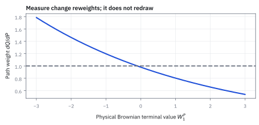
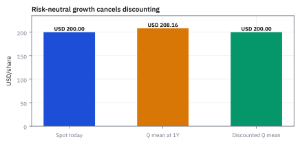
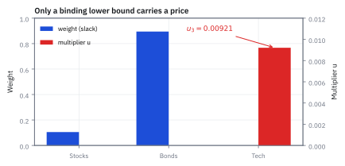
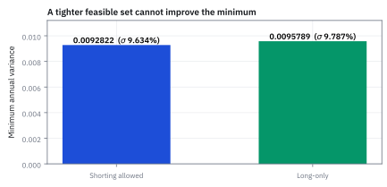

12.6 Karush-Kuhn-Tucker (KKT) Conditions — Inequality Constraints
ข้อบังคับแบบอสมการอาจบีบคำตอบหรือไม่บีบเลยก็ได้ KKT บอกว่าข้อไหนบีบ และตัวคูณของข้อที่บีบคือราคาของมัน
กองทุน long-only (ห้าม short) ต้องลงเงินครบ 100% ในหุ้นสหรัฐฯ (SD 20%) พันธบัตร (SD 10%) และหุ้นเทค (SD 35% correlation กับหุ้นสหรัฐฯ 0.65) และต้องการพอร์ตความเสี่ยงต่ำสุด สูตรของ 12.4 สั่งหุ้นสหรัฐฯ 17.14% พันธบัตร 89.30% หุ้นเทค −6.44% ซึ่ง mandate ห้าม นักวิเคราะห์จึงตัดหุ้นเทคเป็นศูนย์แล้วปรับสองตัวที่เหลือให้รวมได้ 100% ได้ 16.10% กับ 83.90% นี่คือพอร์ต long-only ที่เสี่ยงน้อยที่สุดไหม?
ลองตอบก่อนเปิดเฉลย
ไม่ใช่ พอร์ตที่ถูกคือหุ้นสหรัฐฯ 10.53% พันธบัตร 89.47% หุ้นเทค 0% ความผันผวน 9.787% ส่วนพอร์ตที่ตัดแล้วปรับสัดส่วนได้ 9.847% เสี่ยงเกินไป 6.0 bp ต่อปีฟรี ๆ เพราะเมื่อหุ้นเทคหายไป สัดส่วนที่ดีที่สุดของอีกสองตัวก็เปลี่ยน ต้องแก้ใหม่ ไม่ใช่ย่อขยาย KKT ยังบอกราคาของกฎ: ห้าม short ทำให้ความผันผวนขึ้น 15.3 bp จาก 9.634% และตัวคูณของกฎ $u_3=0.00921$
สิ่งที่เราจะสร้าง
12.4 จบที่งบ \$0.5 ล้าน ซึ่ง Lagrange สั่งให้เดสก์ 1 ถือทุนติดลบ ปัญหาคือ Lagrange รู้จักแค่ข้อบังคับที่เป็นสมการ แต่กฎจริงส่วนใหญ่เป็นอสมการ: ห้าม short ถือตัวเดียวไม่เกิน 10% เงินสดไม่ต่ำกว่า 5% อสมการต่างจากสมการตรงที่มันอาจบีบคำตอบ หรืออาจยังเหลือที่ว่างและไม่มีผลเลย
เราจะเริ่มจากตัวแปรเดียวเพื่อดูว่าเงื่อนไขหน้าตาอย่างไรและทำไมตัวคูณต้องไม่ติดลบ ใช้มันแก้โจทย์เดสก์ทั้งกรณีที่กฎบีบและไม่บีบ แล้วเขียนเงื่อนไขทั่วไปสี่ข้อ จากนั้นแก้พอร์ตสามสินทรัพย์ด้วยการเดาว่าข้อไหนบีบแล้วสอบ อ่านราคาของกฎห้าม short และจบด้วยข้อมูลชุดเดียวกันที่เปลี่ยนเป้าหมายแล้วกฎไม่บีบอีกต่อไป
ศัพท์ที่ใช้ในหัวข้อนี้
- KKT conditions
- เงื่อนไขสี่ข้อที่จุดดีที่สุดของโจทย์ที่มีอสมการต้องผ่าน ใช้ทั้งตรวจคำตอบและหาคำตอบ ชื่อมาจาก Karush, Kuhn และ Tucker
- Active (binding) constraint
- อสมการที่คำตอบชนขอบพอดี เช่นน้ำหนักเป็นศูนย์พอดี เป็นข้อที่กำลังบีบคำตอบและอาจมีราคา
- Inactive constraint
- อสมการที่คำตอบยังห่างขอบ เช่นน้ำหนักบวก ข้อนี้ไม่มีผลต่อคำตอบ ราคาจึงเป็นศูนย์
- Complementary slackness
- กฎที่ว่าตัวคูณคูณระยะห่างจากขอบต้องเป็นศูนย์ ข้อที่ยังไม่ชนขอบจึงไม่มีราคา
- Dual feasibility
- กฎว่าตัวคูณของอสมการต้องไม่ติดลบ (ในรูปมาตรฐาน) ถ้าติดลบแปลว่าปล่อยขอบแล้วดีกว่า เดาผิด
- Active set
- ชุดของอสมการที่ชนขอบ ณ คำตอบ วิธีแก้แบบ active set คือเดาชุดนี้ แก้เหมือนสมการ แล้วสอบด้วยเครื่องหมาย
สัญลักษณ์และหน่วย
| สัญลักษณ์ | ความหมาย | หน่วย |
|---|---|---|
| $x$ | น้ำหนักหุ้นสหรัฐฯ พันธบัตร หุ้นเทค | สัดส่วนของ NAV |
| $V$ | covariance รายปี 3×3 | return² ต่อปี |
| $g_i(x)=-x_i\le0$ | กฎห้าม short ของสินทรัพย์ $i$ ในรูปมาตรฐาน | สัดส่วนของ NAV |
| $\nu$ | ตัวคูณของงบลงเงินครบ (สมการ) ติดลบได้ | variance ต่อหน่วยน้ำหนัก |
| $u_i$ | ตัวคูณของกฎห้าม short ต้องไม่ติดลบ | variance ต่อหน่วยน้ำหนัก |
| $(Vx)_i$ | covariance ของสินทรัพย์ $i$ กับพอร์ต (ครึ่งหนึ่งของ marginal variance, 12.2) | return² ต่อปี |
ขั้นที่ 1 — ตัวแปรเดียวกับกำแพงหนึ่งด้าน
หาค่าต่ำสุดของ $f(x)$ โดยห้าม $x$ ติดลบ มีได้สองแบบ: จุดต่ำสุดอยู่กลางพื้นที่ หรือชนกำแพงที่ศูนย์ ดูแต่ละแบบว่าความชันต้องเป็นอย่างไร
กลางพื้นที่เดินได้ทั้งซ้ายและขวา ความชันจึงต้องเป็นศูนย์แบบ 12.1 ที่กำแพงเดินได้ทางเดียวคือเข้าไปทางขวา ถ้าความชันติดลบ เดินขวาแล้วต่ำลง จึงยังไม่ใช่คำตอบ ความชันที่กำแพงจึงต้องไม่ติดลบ บรรทัดที่สามรวมสองกรณีเป็นเงื่อนไขเดียว: $u$ ไม่ติดลบ และ $u$ กับ $x^\star$ ต้องมีตัวหนึ่งเป็นศูนย์
ตัวอย่างที่สอง จุดต่ำสุดโดยไม่มีกำแพงคือ −1 ซึ่งห้าม คำตอบจึงชนกำแพงที่ 0 และ $u=2$ คือแรงที่ objective ดันกำแพง ถ้ากำแพงถอยไปทางลบนิดหนึ่ง $\varepsilon$ ค่าต่ำสุดจะลดราว $2\varepsilon$ ตัวคูณจึงเป็นราคาของกำแพง แบบเดียวกับ 12.4
ขั้นที่ 2 — โจทย์เดสก์ของ 12.4: กฎบีบเมื่องบน้อย ไม่บีบเมื่องบมาก
โจทย์ให้อะไรมาบ้าง: กำไร $2\ln(1+x_1)+4\ln(1+x_2)$ ทุนรวม $b$ และทุนห้ามติดลบ เขียนเป็นการหาค่าต่ำสุดของ $-F$ แล้วใช้ขั้นที่ 1 ทีละเดสก์ ได้ $u_i=\nu-\partial F/\partial x_i\ge0$ และ $u_ix_i=0$ (เดสก์ที่ได้ทุนต้องมีกำไรส่วนเพิ่มเท่ากับ $\nu$ พอดี เดสก์ที่ได้ศูนย์ต้องมีกำไรส่วนเพิ่มไม่เกิน $\nu$)
คำตอบ: ที่งบ \$0.5 ล้าน กฎห้ามทุนติดลบของเดสก์ 1 บีบ: เดสก์ 1 ได้ศูนย์ และ $u_1=0.667$ คือส่วนที่กำไรส่วนเพิ่มของเดสก์ 1 (2) ต่ำกว่าอัตราตลาดภายใน (2.667) ที่งบ \$12 ล้าน กฎไม่บีบ: ทุนบวกทั้งคู่ ตัวคูณเป็นศูนย์ และ KKT ลดรูปเป็น Lagrange ของ 12.4 ทุกตัวอักษร
ตรวจเองใน 10 วินาที: $u_1x_1=0.667\times0=0$ และที่งบ 12 $u_i=0$ คูณอะไรก็ศูนย์ เส้นแบ่งคืองบ \$1 ล้าน ที่นั่น $\nu=4/2=2$ เท่ากับกำไรส่วนเพิ่มของเดสก์ 1 ที่ศูนย์พอดี
ขั้นที่ 3 — เงื่อนไขทั่วไปสี่ข้อ
หลายตัวแปรใช้เหตุผลเดียวกับขั้นที่ 1 ทีละกำแพง รูปมาตรฐานคือหาค่าต่ำสุด สมการเขียน $h(x)=0$ อสมการเขียน $g_i(x)\le0$ กฎห้าม short $x_i\ge0$ จึงเขียนเป็น $g_i=-x_i\le0$ ข้างล่างเป็นนิยามของ Lagrangian และเงื่อนไขสี่ข้อ
ข้อ 1 คือความชันสมดุลแบบ 12.4 ข้อ 2 คือคำตอบต้องทำตามกฎ (primal) ข้อ 3 คือตัวคูณของอสมการไม่ติดลบ (dual) ข้อ 4 คือถ้ายังไม่ชนขอบ ตัวคูณต้องเป็นศูนย์ (complementary slackness) ตัวคูณ $\nu$ ของสมการไม่มีข้อ 3 เพราะสมการดันได้ทั้งสองทาง
สำหรับพอร์ต $f=x^{\mathsf T}Vx$, $h=\mathbf1^{\mathsf T}x-1$, $g_i=-x_i$ ข้อ 1 จึงเป็น $2Vx+\nu\mathbf1-u=0$ หรือ $u_i=2(Vx)_i+\nu$ และเมื่อ objective เป็นชาม (12.1) กับกฎเป็นเส้นตรง จุดที่ผ่านทั้งสี่ข้อคือคำตอบที่ดีที่สุดของทั้งโจทย์
ขั้นที่ 4 — covariance สามสินทรัพย์
ทแยงคือ $\sigma_i^2$ นอกทแยงคือ $\rho_{ij}\sigma_i\sigma_j$ (8.1) ใช้ correlation หุ้นสหรัฐฯ–พันธบัตร 0.30 หุ้นสหรัฐฯ–หุ้นเทค 0.65 และพันธบัตร–หุ้นเทค 0.30 ตัวเลขทั้งหมดเป็นแบบจำลองสมมติ
$V_{13}=0.0455$ ใหญ่กว่า $V_{12}$ ถึง 7.6 เท่า หุ้นเทคกับหุ้นสหรัฐฯขึ้นลงด้วยกันแรง นี่คือเหตุที่สูตรจะอยาก short หุ้นเทคเพื่อหักล้างหุ้นสหรัฐฯ
ขั้นที่ 5 — ถ้า short ได้: สูตรสั่ง short หุ้นเทค 6.44%
โจทย์ให้อะไรมาบ้าง: ตัดกฎห้าม short ทิ้ง $u=0$ ทั้งหมด เหลือพอร์ตความเสี่ยงต่ำสุดของ 12.4 คือ $x=V^{-1}\mathbf1/(\mathbf1^{\mathsf T}V^{-1}\mathbf1)$ แก้ระบบ $Vz=\mathbf1$ ขนาด 3×3 แล้วหารด้วยผลรวม
คำตอบ: สูตรอยาก short หุ้นเทค 6.44% ทั้งที่มันผันผวนที่สุด เพราะขา short ทำหน้าที่เป็นประกันของหุ้นสหรัฐฯ เวลาหุ้นสหรัฐฯลง หุ้นเทคมักลงด้วย ขา short จึงได้กำไรมาหักล้าง ทางคณิตศาสตร์ถูก แต่ตกข้อ 2 (primal) ของ KKT ใน mandate นี้
ตรวจเองใน 10 วินาที: $0.171392+0.893041-0.064433=1$ และที่คำตอบนี้ $(Vx)_i$ ทั้งสามตัวเท่ากันที่ 0.0092822 ตามกฎ marginal variance เท่ากันของ 12.2
Figure 12.6a — น้ำหนักเมื่อ short ได้ เทียบกับ long-only

ขั้นที่ 6 — เดาว่ากฎข้อไหนบีบ แล้วสอบทั้ง 7 กรณี
ไม่รู้ล่วงหน้าว่าตัวไหนจะเป็นศูนย์ วิธีตรงไปตรงมาคือเดา: บังคับตัวที่เดาให้เป็นศูนย์ แก้ตัวที่เหลือแบบ Lagrange แล้วคำนวณ $u_i=2(Vx)_i+\nu$ มาสอบ สามสินทรัพย์ แต่ละตัวเป็นศูนย์หรือไม่ ได้ $2^3=8$ กรณี ตัดกรณีศูนย์ทั้งหมดเพราะขัดกับงบ เหลือ 7
| บังคับเป็นศูนย์ | $x$ | ผลสอบ |
|---|---|---|
| ไม่มี | (0.1714, 0.8930, −0.0644) | หุ้นเทคติดลบ ตก primal |
| หุ้นสหรัฐฯ | (0, 1.0045, −0.0045) | หุ้นเทคติดลบ ตก primal ($u_1=-0.0083$ ด้วย) |
| พันธบัตร | (1.0769, 0, −0.0769) | หุ้นเทคติดลบ ตก primal ($u_2=-0.0678$ ด้วย) |
| หุ้นเทค | (0.1053, 0.8947, 0) | ผ่านทั้งสี่ข้อ |
| หุ้นสหรัฐฯ, พันธบัตร | (0, 0, 1) | $u_1=-0.154$ ตก dual |
| หุ้นสหรัฐฯ, หุ้นเทค | (0, 1, 0) | $u_1=-0.008$ ตก dual |
| พันธบัตร, หุ้นเทค | (1, 0, 0) | $u_2=-0.068$ ตก dual |
ตก primal คือเดาน้อยไป ปล่อยตัวที่ควรถูกล็อกให้วิ่งไปติดลบ ตก dual คือเดามากไป ล็อกตัวที่ไม่ควรล็อก เช่นถือพันธบัตรล้วน $(0, 1, 0)$: $(Vx)=(0.006, 0.01, 0.0105)$ พันธบัตรถูกถือจึง $\nu=-2(0.01)=-0.02$ แล้ว $u_1=0.012-0.02=-0.008$ ติดลบ แปลว่าปล่อยให้หุ้นสหรัฐฯมีน้ำหนักจะลดความเสี่ยงได้ การล็อกไว้ที่ศูนย์กำลังทำร้ายพอร์ต
รอดกรณีเดียว ซึ่งต้องเป็นอย่างนั้นเพราะชามที่ทุกทิศโค้งขึ้นมีก้นเดียว software จริงใช้ active-set method ที่เดาฉลาดกว่านี้ เพราะหุ้น 500 ตัวมี $2^{500}$ กรณี
ขั้นที่ 7 — กรณีที่รอด: หุ้นเทคเป็นศูนย์ แล้วสอบครบสี่ข้อ
โจทย์ให้อะไรมาบ้าง: บังคับ $x_3=0$ แถวและหลักที่ 3 หลุดจากปัญหา เหลือพอร์ตความเสี่ยงต่ำสุดสองสินทรัพย์ของ 12.1 และ 12.4 คือ $(2/19, 17/19)$ แล้วคูณ $V$ ทั้ง 3×3 เพื่อหาตัวคูณ
คำตอบ: $x=(10.53\%, 89.47\%, 0)$, $\nu=-0.019158$, $u=(0, 0, 0.00921)$ ข้อ 1 ผ่านตามการสร้าง ข้อ 2 น้ำหนักไม่ติดลบและรวมได้ 1 ข้อ 3 ทุก $u$ ไม่ติดลบ ข้อ 4 $u_ix_i=0$ ทั้งสามคู่ กฎห้าม short ของหุ้นเทคบีบ กฎของอีกสองตัวไม่บีบ
ตรวจเองใน 10 วินาที: สองตัวที่ถือมี $(Vx)$ เท่ากันและเท่ากับ $\sigma^2=0.0095789$ ลายเซ็นของพอร์ตความเสี่ยงต่ำสุด (12.2) ส่วน $u_3=2[(Vx)_3-\sigma^2]$ คือสองเท่าของส่วนที่หุ้นเทคแพงเกินพอร์ตในแง่ความเสี่ยง ถ้าวันหนึ่งส่วนนี้เป็นศูนย์ กฎห้าม short จะไม่มีราคา $\nu$ ติดลบไม่ผิดกติกา เพราะเป็นตัวคูณของสมการ
Figure 12.6b — หุ้นเทคสอบตกเกณฑ์ marginal variance

Figure 12.6c — น้ำหนักกับตัวคูณ: ตัวใดตัวหนึ่งต้องเป็นศูนย์

ขั้นที่ 8 — u₃ คือราคาของกฎห้าม short
ตามขั้นที่ 1 ถ้าถอยกำแพงไป $\varepsilon$ ค่าต่ำสุดลดราว $u\varepsilon$ ทดสอบด้วยการยอมให้ short หุ้นเทคได้ 1% ($x_3=-0.01$) แล้วแก้สองตัวที่เหลือใหม่ด้วยงบ 1.01
variance ลดจริง 0.0000850 ตัวคูณทำนาย 0.0000921 สูงไป 8.4% เพราะเป็นความชันที่จุดเดียว เหมือน $\nu$ ใน 12.4 ความผันผวนลด 4.35 bp บนพอร์ต \$5 พันล้าน SD ของ P&L รายปีลดจาก \$489.36 ล้าน เป็น \$487.19 ล้าน คือ \$2.17 ล้าน จากการ short แค่ 1%
ต้นทุนทั้งหมดของกฎ คือความผันผวน 9.787% เทียบ 9.634% เมื่อ short ได้เต็มที่ ต่างกัน 15.3 bp ต่อปี ตัวคูณบอกราคาของการผ่อนเล็ก ๆ ส่วนการผ่อนเต็มที่ต้องแก้ใหม่ทั้งโจทย์
Figure 12.6d — ราคาของ mandate ในหน่วย variance

ขั้นที่ 9 — ข้อมูลเดิม กฎเดิม เป้าหมายใหม่: กฎไม่บีบเลย
โจทย์ให้อะไรมาบ้าง: เปลี่ยนเป้าหมายเป็น mean-variance ของ 12.5 ด้วย $\mu=(12\%, 6\%, 15\%)$ และ $\gamma=2$ ยังลงเงินครบและห้าม short เงื่อนไขข้อ 1 กลายเป็น $u=2\gamma Vx-\mu+\nu\mathbf1$ เดาว่าหุ้นเทคยังเป็นศูนย์ ได้คำตอบของ 12.5 คือ (0.5, 0.5, 0) แล้วสอบ
คำตอบ: การเดานั้นตก dual ($u_3$ ติดลบ) แปลว่าปล่อยหุ้นเทคเถอะ แก้ใหม่โดยไม่บังคับได้น้ำหนักบวกทั้งสามตัว หุ้นเทค 3.50% กฎห้าม short ไม่บีบเลย ตัวคูณเป็นศูนย์ทั้งหมด และ KKT ลดรูปเป็น 12.5
ตรวจเองใน 10 วินาที: ข้อมูลและกฎเหมือนเดิมทุกตัว แต่ active set คนละชุด เป้าหมายแรกสนใจแค่ความเสี่ยง หุ้นเทคผันผวนเกินไปจึงถูกเตะออก เป้าหมายที่สองให้เครดิตผลตอบแทน 15% ของมันจึงคุ้มที่จะถือ อย่าถามว่ากฎนี้บีบไหมลอย ๆ ต้องถามว่าภายใต้เป้าหมายไหน
คำถามที่ควรถามออกมาดัง ๆ
ทำไมตัวคูณของสมการติดลบได้ แต่ของอสมการไม่ได้? สมการดันได้สองทาง จะผ่อนขึ้นหรือลงก็ได้ ส่วนกำแพงของอสมการดันได้ทางเดียว ถ้าคำนวณตัวคูณของมันได้ติดลบ แปลว่า objective อยากเดินออกจากกำแพงเข้าไปในเขตที่อนุญาต ซึ่งทำได้อยู่แล้ว กำแพงจึงไม่ได้บีบจริง เราเดาผิด
KKT เกี่ยวกับ duality ของ 11.3 อย่างไร? เมื่อทุกอย่างเป็นเส้นตรง KKT คือเงื่อนไขที่ primal กับ dual ของ LP พบกัน ตัวคูณคือตัวแปร dual เมื่อไม่มีอสมการเลย KKT คือ Lagrange ของ 12.4 หน้านี้จึงเป็นจุดที่สองบทมาบรรจบกัน
กับดัก: ตัดแล้วปรับสัดส่วน และสอบแค่ครึ่งเดียว
ตัดน้ำหนักที่ติดลบเป็นศูนย์แล้วย่อขยายที่เหลือให้รวมได้ 1 คือโจทย์เปิดเรื่อง: $(0.171392, 0.893041)/1.064433=(16.10\%, 83.90\%)$ ความผันผวน 9.847% แย่กว่าคำตอบ KKT 6.0 bp ต่อปี ถ้าไม่เคยคำนวณ KKT ก็ไม่มีวันรู้ว่าเสียไปเท่าไร
สอบแค่ว่าน้ำหนักไม่ติดลบและรวมได้ 1 (primal) ไม่พอ สามกรณีท้ายของตารางขั้นที่ 6 ผ่าน primal ทั้งหมด ถ้ายอมรับกรณีถือหุ้นเทคล้วน variance คือ 0.1225 สูงกว่าคำตอบจริง 12.8 เท่า ต้องสอบเครื่องหมายของตัวคูณ (dual) เสมอ และต้องเขียนรูปมาตรฐานให้ถูก: หาค่าต่ำสุด อสมการแบบ $g\le0$ ตัวคูณไม่ติดลบ สามอย่างนี้ไปด้วยกัน เปลี่ยนอย่างหนึ่งต้องกลับเครื่องหมายอีกสองอย่าง
ใช้ทำอะไรบนโต๊ะจริง
ทุก mandate มีอสมการเต็มไปหมด และ optimizer เชิงพาณิชย์คืนตัวคูณของทุกข้อมาพร้อมน้ำหนัก ตัวคูณเหล่านั้นคือใบเสร็จของกฎ: ข้อที่ตัวคูณเป็นศูนย์คือกฎที่เขียนไว้แต่ไม่ได้กัดอะไรในวันนี้ ข้อที่ตัวคูณใหญ่คือข้อที่ควรเอาไปคุยกับคณะกรรมการก่อน เพราะมีตัวเลขรองรับว่าแลกมาด้วยความเสี่ยงเท่าไร
อย่าลืมว่าตัวคูณเป็นราคาของการผ่อนเล็ก ๆ ถ้าจะขอผ่อนให้ short ได้ 30% ต้องแก้ใหม่ เพราะ active set อาจเปลี่ยนทั้งชุด และคำตอบที่ชนขอบพอดีมักกระโดดเมื่อ input ขยับนิดเดียว ซึ่ง 12.8 จะใช้ต้นทุนการเทรดช่วยให้นิ่งขึ้น
สามโจทย์ตรวจความเข้าใจ
1. หาค่าต่ำสุดของ $f(x)=(x-3)^2+4$ เมื่อ $x\le1$ เขียนรูปมาตรฐาน หาคำตอบและตัวคูณ แล้วทำซ้ำเมื่อกฎเป็น $x\le5$
เฉลย
รูปมาตรฐาน $g=x-1\le0$ ข้อ 1: $f'(x)+u=0$ จุดต่ำสุดไม่มีกฎคือ 3 ซึ่งห้าม คำตอบจึงชนขอบ $x=1$ และ $u=-f'(1)=-2(1-3)=4\ge0$ ผ่าน ค่า $f(1)=8$ ผ่อนกฎเป็น $x\le1+\varepsilon$ ค่าต่ำสุดลดราว $4\varepsilon$ ถ้ากฎเป็น $x\le5$ คำตอบคือ 3 อยู่ในเขต กฎไม่บีบ $u=0$
2. โจทย์เดสก์ขั้นที่ 2 ที่งบ \$0.8 ล้าน คำตอบและตัวคูณคืออะไร?
เฉลย
Lagrange ให้ $x_1=(0.8-1)/3\approx-0.067$ ใช้ไม่ได้ จึงเดาว่าเดสก์ 1 ได้ศูนย์ $x=(0, 0.8)$ เดสก์ 2 ได้ทุนจึง $\nu=4/1.8\approx2.222$ แล้ว $u_1=2.222-2=0.222\ge0$ ผ่าน dual กฎบีบ แต่น้อยกว่าที่งบ 0.5 ($u_1=0.667$) เพราะงบใกล้เส้นแบ่ง \$1 ล้าน มากขึ้น
3. พอร์ต long-only ความเสี่ยงต่ำสุดของหน้านี้ ถ้าเพิ่มกฎพันธบัตรไม่เกิน 80% คำตอบและตัวคูณของเพดานเป็นเท่าไร?
เฉลย
เดาว่าพันธบัตรชนเพดาน 0.8 หุ้นเทคเป็นศูนย์ หุ้นสหรัฐฯได้ 0.2 จากงบ $(Vx)=(0.0128, 0.0092, 0.0175)$ หุ้นสหรัฐฯถูกถืออิสระจึง $\nu=-2(0.0128)=-0.0256$ เพดานเขียนเป็น $x_2-0.8\le0$ ตัวคูณคือ $w=-[2(0.0092)-0.0256]=0.0072\ge0$ หุ้นเทค $u_3=2(0.0175)-0.0256=0.0094\ge0$ ผ่านครบ variance 0.00992 (σ 9.960%) ตรวจราคา: เพดาน 81% ให้ 0.0098518 ลดลง 0.0000682 ใกล้ $0.0072\times0.01=0.000072$
คำนวณซ้ำด้วย JavaScript
รันใน Node.js ได้โดยไม่ติดตั้งแพ็กเกจ โค้ดสร้าง covariance จาก SD กับ correlation และปฏิเสธ correlation ที่ใช้ไม่ได้ แก้โจทย์ทีละ active set ด้วย Gaussian elimination ที่ปฏิเสธระบบ singular คำนวณตัวคูณ สอบสี่ข้อของ KKT ครบทั้ง 7 กรณี ทดสอบราคาของกฎด้วยการผ่อน 1% และเทียบกับการตัดแล้วปรับสัดส่วน แล้วพิมพ์ผลเป็น JSON บรรทัดเดียว
function covariance(sd, corr) {
const n = Array.isArray(sd) ? sd.length : 0;
if (n === 0 || !sd.every(s => Number.isFinite(s) && s > 0)) throw new RangeError('Volatilities must be positive');
if (!Array.isArray(corr) || corr.length !== n || corr.some(r => !Array.isArray(r) || r.length !== n)) throw new TypeError('Correlation must be n by n');
corr.forEach((r, i) => r.forEach((c, j) => {
if (!Number.isFinite(c) || Math.abs(c) > 1 || c !== corr[j][i] || (i === j && c !== 1)) throw new RangeError('Invalid correlation matrix');
}));
return corr.map((r, i) => r.map((c, j) => c * sd[i] * sd[j]));
}
function solveLinear(A, b) {
const n = A.length, M = A.map((r, i) => [...r, b[i]]);
for (let c = 0; c < n; c++) {
let p = c;
for (let r = c + 1; r < n; r++) if (Math.abs(M[r][c]) > Math.abs(M[p][c])) p = r;
if (Math.abs(M[p][c]) < 1e-14) throw new RangeError('Singular system: active set not solvable');
[M[c], M[p]] = [M[p], M[c]];
for (let r = 0; r < n; r++) {
if (r === c) continue;
const f = M[r][c] / M[c][c];
for (let k = c; k <= n; k++) M[r][k] -= f * M[c][k];
}
}
return M.map((r, i) => r[n] / r[i]);
}
const times = (V, x) => V.map(r => r.reduce((s, v, j) => s + v * x[j], 0));
// Minimise gamma x'Vx - mu'x with sum x = total; weights outside `free` are held at `fixed` (default 0).
// Returns weights, the budget multiplier nu and the bound multipliers u = 2 gamma Vx - mu + nu 1.
function solveActiveSet(V, free, {mu = V.map(() => 0), gamma = 1, total = 1, fixed = {}} = {}) {
if (!Array.isArray(free) || free.length === 0 || new Set(free).size !== free.length || free.some(i => !(i >= 0 && i < V.length))) {
throw new RangeError('free must list distinct asset indices');
}
const x = V.map((_, i) => fixed[i] ?? 0), m = free.length, rows = [];
free.forEach(i => rows.push([...free.map(j => 2 * gamma * V[i][j]), 1]));
rows.push([...free.map(() => 1), 0]);
const rhs = free.map(i => mu[i] - 2 * gamma * V[i].reduce((s, v, j) => s + (free.includes(j) ? 0 : v * x[j]), 0));
rhs.push(total - x.reduce((s, v, j) => s + (free.includes(j) ? 0 : v), 0));
const sol = solveLinear(rows, rhs);
free.forEach((i, a) => { x[i] = sol[a]; });
const nu = sol[m], Vx = times(V, x), variance = x.reduce((s, v, i) => s + v * Vx[i], 0);
const u = Vx.map((v, i) => 2 * gamma * v - mu[i] + nu);
return {x, nu, u, Vx, variance, sd: Math.sqrt(variance), J: mu.reduce((s, v, i) => s + v * x[i], 0) - gamma * variance};
}
// The four KKT checks for bounds x_i >= 0 (tolerance for rounding).
function kkt(r, tol = 1e-12) {
return {primal: r.x.every(v => v >= -tol) && Math.abs(r.x.reduce((s, v) => s + v, 0) - 1) <= tol,
dual: r.u.every(v => v >= -tol), complementary: r.u.every((v, i) => Math.abs(v * r.x[i]) <= tol)};
}
const names = ['stocks', 'bonds', 'tech'];
const V = covariance([0.20, 0.10, 0.35], [[1, 0.30, 0.65], [0.30, 1, 0.30], [0.65, 0.30, 1]]);
const sets = [[0, 1, 2], [1, 2], [0, 2], [0, 1], [2], [1], [0]];
const table = sets.map(free => {
const r = solveActiveSet(V, free);
return {zero: names.filter((_, i) => !free.includes(i)), x: r.x, u: r.u, variance: r.variance, ...kkt(r)};
});
const best = solveActiveSet(V, [0, 1]), open = solveActiveSet(V, [0, 1, 2]);
const relaxed = solveActiveSet(V, [0, 1], {fixed: {2: -0.01}});
const clipped = [open.x[0], open.x[1], 0].map(v => v / (open.x[0] + open.x[1]));
const clippedVariance = clipped.reduce((s, v, i) => s + v * times(V, clipped)[i], 0);
const mu = [0.12, 0.06, 0.15];
console.log(JSON.stringify({
oneD: {inside: {x: 2, slope: 2 * (2 - 2), u: 0}, edge: {x: 0, slope: 2 * (0 + 1), u: 2 * (0 + 1)}},
desk: {nu: 4 / 1.5, u1: 4 / 1.5 - 2 / 1, profit: 4 * Math.log(1.5), bigBudget: {nu: 6 / 14, u: [0, 0]}},
V, open, table, best: {...best, ...kkt(best)},
costBp: (best.sd - open.sd) * 1e4,
relaxed: {x: relaxed.x, variance: relaxed.variance, drop: best.variance - relaxed.variance, predicted: best.u[2] * 0.01,
sdBp: (relaxed.sd - best.sd) * 1e4, usdMillion: [5000 * best.sd, 5000 * relaxed.sd, 5000 * (best.sd - relaxed.sd)]},
clipped: {x: clipped, sd: Math.sqrt(clippedVariance), extraBp: (Math.sqrt(clippedVariance) - best.sd) * 1e4},
meanVariance: {guess: solveActiveSet(V, [0, 1], {mu, gamma: 2}), full: solveActiveSet(V, [0, 1, 2], {mu, gamma: 2})},
pitfallRatio: V[2][2] / best.variance,
exercises: {cap: {x: 1, u: -2 * (1 - 3), value: (1 - 3) ** 2 + 4}, desk08: {nu: 4 / 1.8, u1: 4 / 1.8 - 2},
bondCap: (c => ({...c, capMultiplier: -c.u[1]}))(solveActiveSet(V, [0], {fixed: {1: 0.8}})),
bondCap81: solveActiveSet(V, [0], {fixed: {1: 0.81}}).variance}
}));ที่มาที่ไป
William Karush เขียนเงื่อนไขชุดนี้ในวิทยานิพนธ์ปริญญาโทที่มหาวิทยาลัยชิคาโกปี 1939 แต่ไม่ได้ตีพิมพ์ Harold Kuhn และ Albert Tucker ตีพิมพ์เงื่อนไขชุดเดียวกันในปี 1951 และเมื่องานของ Karush ถูกพบภายหลัง ชื่อของเขาจึงถูกเติมไว้ข้างหน้า
ข้อจำกัด: หน้านี้สมมติอะไร และของจริงเป็นอย่างไร
| เรื่อง | หน้านี้สมมติว่า | ของจริง | ผลเวลาใช้งาน |
|---|---|---|---|
| จำนวนกรณี | ไล่ครบทุก active set | กรณีโตเป็น $2^n$ | ใช้ solver แบบ active set หรือ interior point ไม่ไล่มือ |
| รูปทรง | objective เป็นชาม กฎเป็นเส้นตรง | ต้นทุนบางแบบหรือกฎนับจำนวนหุ้นทำให้ไม่ convex | ผ่าน KKT แล้วอาจเป็นแค่ local (12.1) |
| ความนิ่ง | คำตอบนิ่ง | กฎที่ชนขอบพอดีทำให้คำตอบกระโดดเมื่อ input ขยับ | turnover สูงโดยไม่จำเป็น (12.8) |
| ราคาของกฎ | ตัวคูณใช้กับการผ่อนเล็ก ๆ | คนขอผ่อนก้อนใหญ่ | ผ่อน 1% ตัวคูณเกินจริง 8.4% ก้อนใหญ่ต้องแก้ใหม่ |
สิ่งที่ควรตอบได้หลังอ่าน
- ที่กำแพง ความชันเข้าหาเขตที่อนุญาตต้องไม่ติดลบ: ตัวคูณของอสมการ $u\ge0$ และ $u$ คูณระยะห่างจากขอบเป็นศูนย์
- KKT มีสี่ข้อ: ความชันสมดุล, ทำตามกฎ, ตัวคูณไม่ติดลบ, complementary slackness และเมื่อโจทย์ convex สี่ข้อนี้พอเพียง
- กฎเดียวกันบีบบ้างไม่บีบบ้าง: เดสก์ที่งบ \$0.5 ล้าน $u_1=0.667$ ที่งบ \$12 ล้าน $u=0$ และพอร์ต mean-variance ถือหุ้นเทค 3.50% โดยกฎห้าม short ไม่บีบ
- พอร์ต long-only ความเสี่ยงต่ำสุดคือ 10.53/89.47/0 ที่ 9.787% กฎห้าม short มีราคา 15.3 bp และ $u_3=0.00921$ ผ่อน 1% ลด SD ของ P&L \$2.17 ล้าน บนพอร์ต \$5 พันล้าน
- ห้ามตัดแล้วปรับสัดส่วน (เสีย 6.0 bp) และห้ามสอบแค่ primal ต้องสอบเครื่องหมายตัวคูณด้วย
12.7 จะถามว่าเมื่อโจทย์ไม่มีสูตรปิด เครื่องคำนวณเดินไปหาคำตอบอย่างไร และเลือกขนาดก้าวอย่างไรไม่ให้ระเบิด